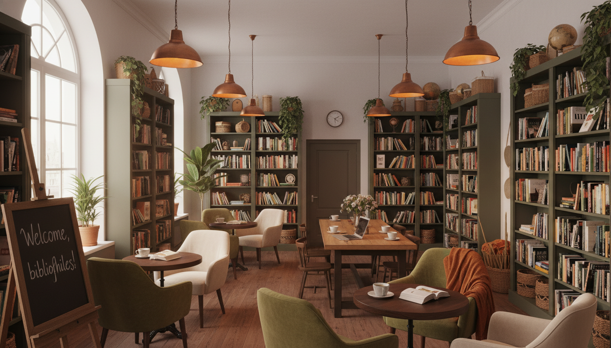

How It All Began
Lauren's Cafe & Bookstore opened its doors in 2018, born from a simple dream: to create a space where the community could gather, slow down, and rediscover the simple pleasures of a good book and a perfect cup of coffee.
Our founder, Lauren Taylor, spent fifteen years working in publishing before deciding to create the kind of space she always wished existed—a haven that combines her two greatest loves. What started as a small corner shop with fifty books and a single espresso machine has grown into a beloved community gathering place.
Today, we house over 5,000 carefully curated titles, serve coffee sourced from sustainable farms around the world, and host dozens of community events each year. But our mission remains the same: to provide a warm, welcoming space where stories come alive.

Our Values
Community First
We believe a cafe should be more than a place to grab coffee—it should be a gathering place for neighbors, friends, and strangers who might become friends. Every decision we make puts our community at the center.
Quality Without Compromise
From our single-origin beans to our hand-selected book collection, we never cut corners. Our baristas are trained extensively, and every book on our shelves has been personally reviewed by our staff.
Sustainability
We partner with eco-conscious suppliers, use compostable packaging, and donate unsold pastries to local shelters. Our used book exchange program keeps beloved stories circulating in our community.

Our Commitment to Sustainability
At Lauren's, we take our environmental responsibility seriously. Here's how we're making a difference:
- 100% compostable cups, lids, and utensils
- Coffee beans sourced from Rainforest Alliance certified farms
- Book exchange program to promote reuse and reduce waste
- Solar panels power 40% of our electricity needs
- Partnership with local food banks for end-of-day donations
- Discount for customers who bring reusable cups
Meet the Team
Lauren Taylor
Founder & Owner
Former publishing editor with a passion for connecting readers with their next favorite book. You'll often find her reorganizing the fiction section or testing new latte recipes.
Marcus Chen
Head Barista
A certified coffee sommelier with ten years of experience. Marcus personally selects our rotating seasonal blends and trains all new baristas in the art of the perfect pour.
Elena Rodriguez
Book Curator
With a master's degree in literature and a background in library science, Elena ensures our collection represents diverse voices and spans genres from classics to contemporary gems.
James & Olivia Park
Pastry Chefs
This husband-and-wife team brings decades of baking experience. They arrive at 4 AM daily to ensure everything is fresh-baked and ready for our morning regulars.
"Building Lauren's has been the greatest adventure of my life. Every day I get to watch strangers become friends over coffee, see children discover their love of reading, and be part of something bigger than myself. This isn't just a business—it's my heart made tangible."— Lauren Taylor, Founder